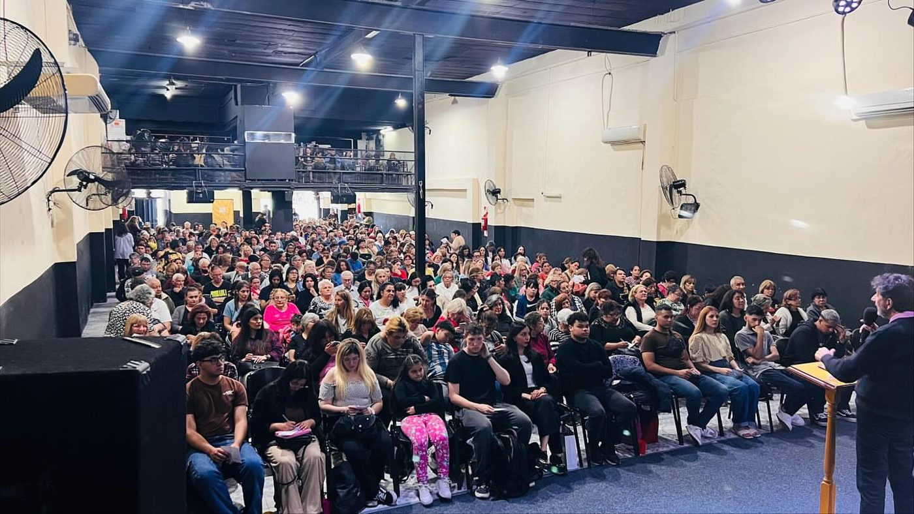
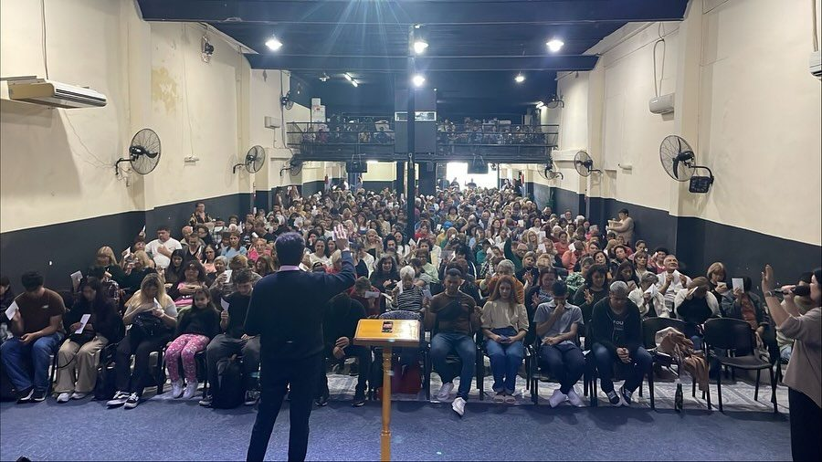
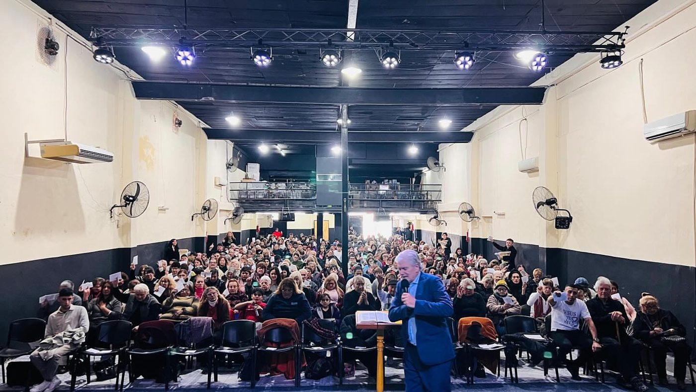
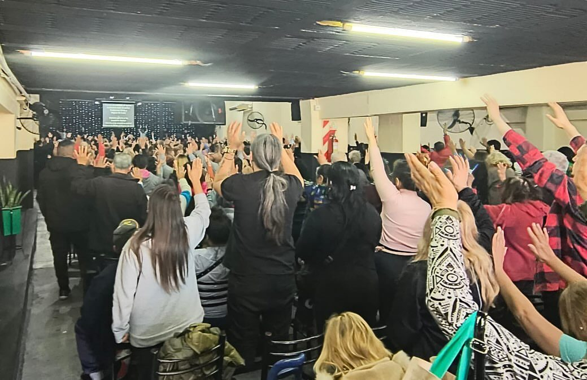
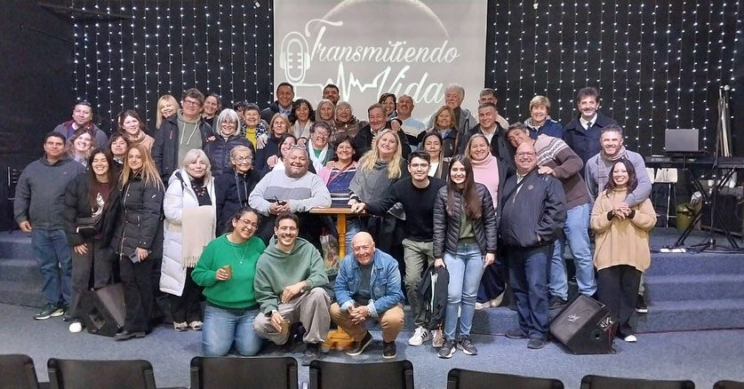
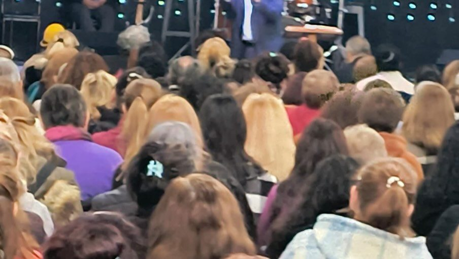
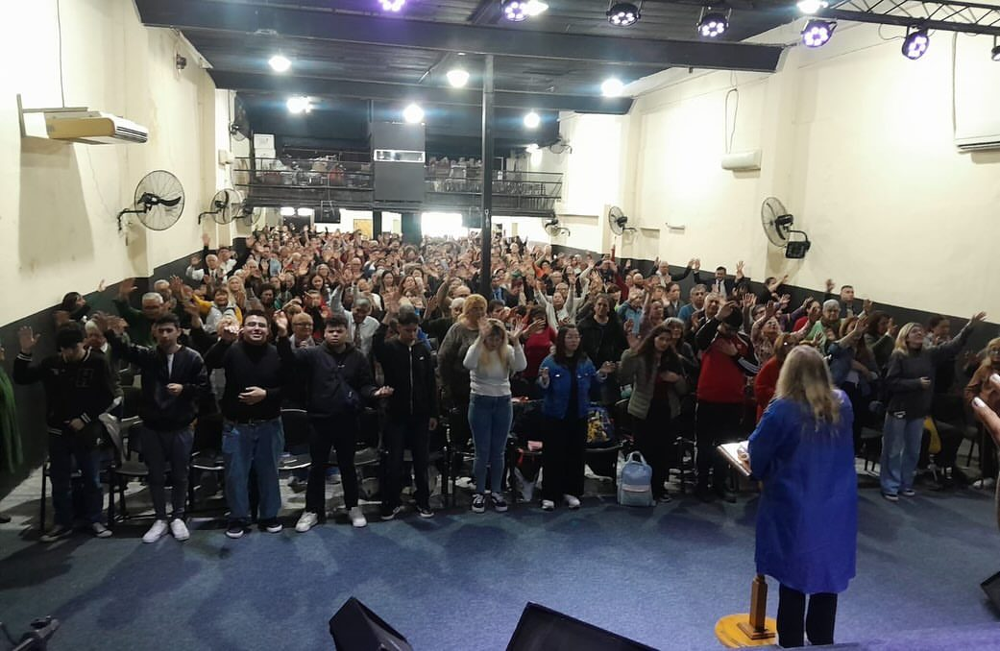

Iglesia · Temperley, Buenos Aires
Transmitiendo Vida.
Con la Pastora Elizabeth Ghioni.
Reuniones en Temperley, lugares de reunión en el país y en Uruguay, y programas de radio de lunes a viernes.

- Dirección
- Avellaneda 2 esq. Meeks · Temperley
- Oración
- Escribinos por WhatsApp
Avisos
No te lo pierdas

Reuniones en Temperley
Avellaneda 2 esquina Meeks, frente a la estación de Temperley.
- Domingos Reunión general8 · 10 · 14 · 18 horas
Cuatro horarios para que elijas el que mejor te queda.
- Martes Reunión14 horas
- Todos los jueves Reunión de oración7 horas
De la mañana.
- Viernes Reunión14 horas
- Cómo llegar

Lugares de reunión
Buscá la reunión más cerca de tu casa. Tocá cada ciudad para ver las próximas fechas.

Reuniones especiales
Reuniones adicionales: pueden cambiar de día, horario o lugar.

Programas en la radio
Transmitiendo Vida de lunes a viernes, en estas emisoras.
05
Enterate de todo
Los avisos y las reuniones nuevas se publican primero en Facebook.
Galería
Nuestras reuniones
Tocá las flechas o deslizá con el dedo 1 / 7

